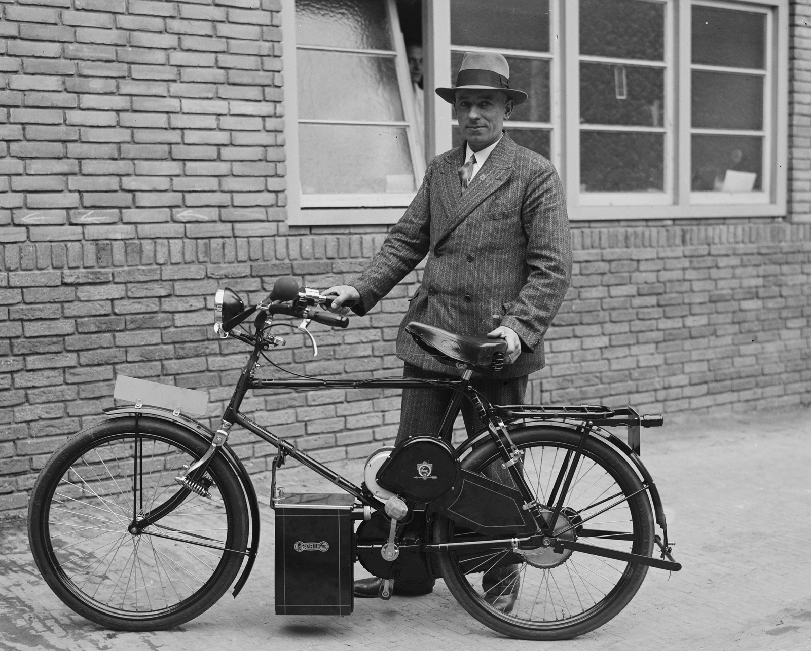

Over ons
De Fluitende Fietser
De Fluitende Fietser is sinds 1960 gevestigd in Nuenen en kent een lange historie met ooit drie vestigingen In de Nuenen, Geldrop en Mierlo. Inmiddels worden alle activiteiten van de De Fluitende Fietser voortgezet in de vestiging in Nuenen. De kracht van de De Fluitende Fietser? Volop aandacht voor elke klant. Een hoog niveau van service en garantie en natuurlijk het bekende, brede assortiment van de meest uiteenlopende fietsproducten en -accessoires.
Ons assortiment
Bij ons bent u aan het juiste adres voor snelle, efficiënte en directe service, uitstekende reparaties en een grote collectie fietsen, regenkleding, accessoires en onderdelen. Het brede assortiment biedt uitsluitend topmerken met een hoge kwaliteit.
Ook op het gebied van bedrijfsfietsplannen heeft de De Fluitende Fietser de juiste oplossing, o.a. in de vorm van kant en klare lease pakketten.
Wij vertegenwoordigen bekende en hoogwaardige merken zoals: Gazelle, Cortina, Pegasus, Sensa Sensa, Popal (kinderfietsen), Dahon (vouwfietsen), Pointer, en Flyke (kinderfietsen). Ook op het gebied van elektrische fietsen hebben we uitsluitend topmerken zoals: Flyer, Gazelle, Pegasus en Cortina. Door de grote vraag naar 2e hands fietsen zijn wij in staat ongekend hoge inruilprijzen voor uw inruilfiets te bieden. Maar ook door inruilacties het gehele jaar door hebben wij altijd een grote collectie 2e hands fietsen in alle prijscategorien.
Onze voordelen
- Professionele service
- Korte lijnen
- Volop aandacht
- Scherpe prijzen
- Snelle levering
- Alleen topkwaliteit
tekst afkomstig van https://www.rijwielcentrale.nl/klantenservice/over-ons.
